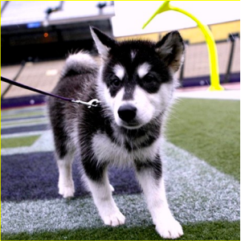

The Clock is Running Out for the Dogs of Northern Lights
 It's been another long year since we've had to reach out to you for help on behalf of our "team", the homeless dogs of Northern Lights Sled Dog Rescue. We've given our best effort to the dogs since long before this tough season began, carefully managing our limited resources without sacrificing the care the dogs need. We’ve searched out donations of high quality food for the "training table". We've acquired a new network of "team doctors" who provide the best possible care (while offering very generous discounts and "freebies") to get and keep our dogs as healthy and strong as possible. We've got a bigger and better group of dedicated volunteer "coaches" than ever before! The majority of our dogs don't have foster families due to the sheer number we take in, and these committed volunteers make regular enrichment visits to the many dogs in paid boarding at the kennel. They are doing amazing work turning broken spirits into winning spirits! In short, we've worked our hardest to make sure each dog is ready on the day of his or her "Big Game" - the day someone like you chooses your own MVP and leads him or her off the field of rescue and into a new life.
But our effort has been nothing compared to that of these incredible dogs. They are our inspiration. Each has faced unique struggles and challenges before being "drafted" for the team. Once onboard, they work tirelessly to show us their own special strengths (and needs) so that we can place them in the best possible position come that allimportant "Game Day" - the day they meet adopters. Many dogs have to put their heart and soul into keeping a positive mental attitude after being passed over again and again. We know their day will come, and we know that YOU believe in them, too! Together, we can continue to help every dog eventually win his or her very own "Forever Team".
But even with all this, it's been a very tough season. Everything hinges on this game, and the clock is running down. We're still standing and have the will to win, but we've been beleaguered by a truly daunting "offense" - and our ability to play on is compromised. We've been sacked repeatedly and we're bruised and bleeding from high medical bills, having suffered an unusually-large number of dogs on the "injured reserve" list. We've also moved a number of dogs into "retirement", where we will meet our commitment to support them for the rest of their lives. Despite a very successful adoptions year so far, we've been moved farther and farther from the goal line by the never-ending stream of dogs in need-which means higher boarding AND medical costs. And finally, we've been blitzed by a decline in donations since last holiday season. Since we operate 100% on contributions from people like you-our adopters and friends-we're starting to get scared. We desperately need the support of that "Twelfth Man" - you! the dogs have the will and the heart and the hope to stay in the game. But we are writing today because all we have left is this “Hail Mary” pass. these sweet, hopeful boys & girls need your help!